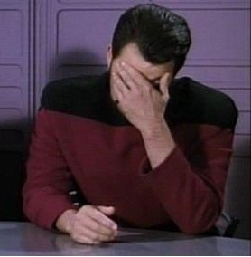

 Однажды меня попросили помочь с редизайном одного интернет-магазина, и хотя я не сильно был знаком с этим направлением, моих навыков хватило для выполнения данной работы. Дальше больше, перешел к backend. переделал один плагин и помогал в написании другого для фреймворка webasyst. в какой то момент я понял что мне катострофически не хватает базовых знаний, а поскольку я увлекся этим, да и работа админом поднадоела, я записался на курсы фулстак разработчка, в надежде что простое увлечение, станет моим новым направлением деятельности.